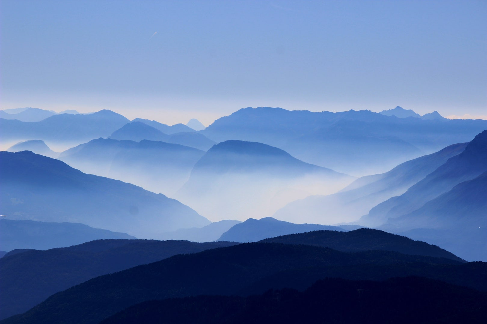

CSS SHAPES
Photo by Mehdi Sepehri on Unsplash
SHAPE
Circle

The shape-outside CSS property defines a shape—which may be non-rectangular—around which adjacent inline content should wrap. By default, inline content wraps around its margin box; shape-outside provides a way to customize this wrapping, making it possible to wrap text around complex objects rather than simple boxes. Sometimes a web page's text content appears to be funneling your attention towards a spot on the page to drive you to follow a particular link. Sometimes you don't notice.
The shape-outside CSS property defines a shape—which may be non-rectangular—around which adjacent inline content should wrap. By default, inline content wraps around its margin box; shape-outside provides a way to customize this wrapping, making it possible to wrap text around complex objects rather than simple boxes. Sometimes a web page's text content appears to be funneling your attention towards a spot on the page to drive you to follow a particular link. Sometimes you don't notice.
The shape-outside CSS property defines a shape—which may be non-rectangular—around which adjacent inline content should wrap. By default, inline content wraps around its margin box; shape-outside provides a way to customize this wrapping, making it possible to wrap text around complex objects rather than simple boxes. Sometimes a web page's text content appears to be funneling your attention towards a spot on the page to drive you to follow a particular link. Sometimes you don't notice.
The shape-outside CSS property defines a shape—which may be non-rectangular—around which adjacent inline content should wrap. By default, inline content wraps around its margin box; shape-outside provides a way to customize this wrapping, making it possible to wrap text around complex objects rather than simple boxes. Sometimes a web page's text content appears to be funneling your attention towards a spot on the page to drive you to follow a particular link. Sometimes you don't notice.
This athletic young Frenchman belongs to a small set of Parisian sportsmen, who have taken up “ballooning” as a pastime. After having exhausted all the sensations that are to be found in ordinary sports, even those of “automobiling” at a breakneck speed, the members of the “Aéro Club” now seek in the air, where they indulge in all kinds of daring feats, the nerve-racking at a breakneck speed, the members of the “Aéro Club” now seek in the air, where they indulge in all kinds of daring feats, the nerve-racking excitement that they have ceased to find on earth.
The shape-outside CSS property defines a shape—which may be non-rectangular—around which adjacent inline content should wrap. By default, inline content wraps around its margin box; shape-outside provides a way to customize this wrapping, making it possible to wrap text around complex objects rather than simple boxes. Sometimes a web page's text content appears to be funneling your attention towards a spot on the page to drive you to follow a particular link. Sometimes you don't notice.
Photos by Boris Smokrovic on Unsplash
SHAPE
Ellipse
We have investigated the paths taken by Budgerigars while flying in a tunnel. The flight trajectories of nine Budgerigars (Melopsittacus undulatus) were reconstructed in 3D from high speed stereo videography of their flights in an obstacle-free tunnel. Individual birds displayed highly idiosyncratic flight trajectories that were consistent from flight to flight over the course of several months. We then investigated the robustness of each bird’s trajectory by interposing a disk-shaped obstacle in its preferred flight path.
We found that each bird continued to fly along its preferred trajectory up to a point very close to the obstacle before veering over the obstacle rapidly, making a minimal deviation to avoid a collision, and subsequently returning to its original path. Thus, Budgerigars show a high propensity to stick to their individual, preferred flight paths even when confronted with a clearly visible obstacle, and do not adopt a substantially different, unobstructed route.
The robust preference for idiosyncratic flight paths, and the tendency to pass obstacles by flying above them, provide new insights into the strategies that underpin obstacle avoidance in birds. We believe that this is the first carefully controlled study of the behaviour of birds in response to a newly introduced obstacle in their flight path. The insights from the study could also have implications for conservation efforts to mitigate collisions of birds with man-made obstacles.
Recently, there has been growing interest in understanding how birds cope with the challenges of short-range navigation and guidance. The motivation for these studies has been to understand the principles of visually guided flight in airborne creatures, as well as to enquire whether some of these biologically evolved principles can be applied to the design of algorithms for the guidance of unmanned aerial vehicles.
Photo by Dalton Touchberry on Unsplash
SHAPE
Polygon
The orange is a hybrid between pomelo (Citrus maxima) and mandarin (Citrus reticulata).[2][6] The chloroplast genome, and therefore the maternal line, is that of pomelo.[7] The sweet orange has had its full genome sequenced
The orange is the fruit of the citrus species Citrus × sinensis in the family Rutaceae, native to China. It is also called sweet orange, to distinguish it from the related Citrus × aurantium, referred to as bitter orange. The sweet orange reproduces asexually; varieties of sweet orange arise through mutations. The orange is a hybrid between pomelo (Citrus maxima) and mandarin (Citrus reticulata).[2][6] The chloroplast genome, and therefore the maternal line, is that of pomelo.[7] The sweet orange has had its full genome sequenced.
The orange originated in Ancient China and the earliest mention of the sweet orange was in Chinese literature in 314 BC.[2] As of 1987, orange trees were found to be the most cultivated fruit tree in the world.[8] Orange trees are widely grown in tropical and subtropical climates for their sweet fruit. The fruit of the orange tree can be eaten fresh, or processed for its juice or fragrant peel.[9] As of 2012, sweet oranges accounted for approximately 70% of citrus production.[10]
The orange is the fruit of the citrus species Citrus × sinensis in the family Rutaceae, native to China. It is also called sweet orange, to distinguish it from the related Citrus × aurantium, referred to as bitter orange. The sweet orange reproduces asexually; varieties of sweet orange arise through mutations. The orange is a hybrid between pomelo (Citrus maxima) and mandarin (Citrus reticulata).[2][6] The chloroplast genome, and therefore the maternal line, is that of pomelo.[7] The sweet orange has had its full genome sequenced.
The orange originated in Ancient China and the earliest mention of the sweet orange was in Chinese literature in 314 BC.[2] As of 1987, orange trees were found to be the most cultivated fruit tree in the world.[8] Orange trees are widely grown in tropical and subtropical climates for their sweet fruit. The fruit of the orange tree can be eaten fresh, or processed for its juice or fragrant peel.[9] As of 2012, sweet oranges accounted for approximately 70% of citrus production.[10]
Photo by Nica Cn on Unsplash